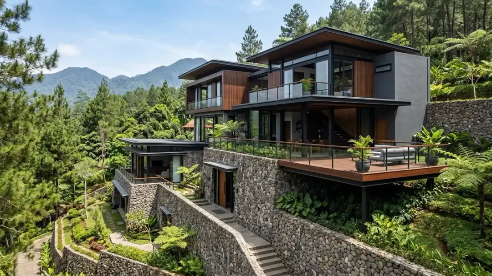

Ringkasan Inti
- Kawasan Dau di Kabupaten Malang memiliki kontur berbukit khas kaki pegunungan dengan variasi kemiringan lereng yang memerlukan analisis topografi mendalam.
- Membangun di lahan miring tanpa rekayasa geoteknik berisiko memicu pergeseran tanah lateral, retak struktural, dan genangan air saat curah hujan tinggi.
- Pendekatan desain split level bertingkat mampu menyelaraskan ruang dengan lereng alami tanpa memerlukan pekerjaan cut and fill masif yang memboroskan anggaran.
- Penerapan dinding penahan tanah (retaining wall) batu kali atau beton bertulang dengan sistem drainase weep hole menjadi kunci kestabilan fondasi jangka panjang.
Daftar Isi Artikel
Kecamatan Dau di Kabupaten Malang kian diminati sebagai lokasi favorit pembangunan villa mewah, hunian peristirahatan, dan cafe panorama karena posisinya yang strategis di koridor Malang–Kota Batu. Namun, karakteristik geografis Dau yang didominasi oleh lereng perbukitan dan kontur tanah miring menghadirkan tantangan teknis tersendiri. Memaksakan denah rumah konvensional lahan datar ke atas lereng berkontur adalah kekeliruan fatal yang dapat memicu pembengkakan biaya fondasi dan risiko bahaya longsor.
1. Apa Karakteristik Kontur Tanah yang Umum Ditemukan di Dau?
Terletak di kaki lereng pegunungan Putri Tidur dan Gunung Panderman, kawasan Dau memiliki formasi geologi tanah vulkanik dengan karakteristik topografi yang unik:
- Elevasi dan Kemiringan Dinamis: Sudut kemiringan lahan di Dau bervariasi mulai dari landai 10% hingga lereng curam melebihi 35%. Dalam satu kavling lahan berukuran 300 m², beda tinggi tanah antara jalan depan dan batas belakang kavling bisa mencapai 3 hingga 6 meter.
- Lapisan Tanah Subur dengan Daya Resap Tinggi: Karakter tanah vulkanis memiliki permeabilitas air yang baik, namun rentan mengalami pelunakan daya dukung (bearing capacity) saat jenuh air di musim penghujan lebat khas Malang.
- Aliran Air Permukaan (Surface Runoff) Cepat: Air hujan bergerak menuruni lereng dengan kecepatan tinggi. Jika tidak ditata dengan saluran drainase trap, aliran ini dapat mengikis lapisan tanah penopang fondasi bangunan.
- Potensi Pemandangan Spektakuler: Perbedaan level ketinggian tanah memberikan peluang arsitektural luar biasa untuk menciptakan bukaan jendela kaca besar yang menghadap langsung ke hamparan lembah hijau Kota Malang dan gemerlap lampu malam hari.

2. Kenapa Lahan Miring Membutuhkan Pendekatan Desain yang Berbeda?
Pada lahan datar, gravitasi hanya bekerja secara vertikal ke bawah menekan tanah dasar. Namun pada lahan miring, bangunan harus menghadapi gaya dorong tanah lateral (lateral earth pressure) yang berupaya mendorong struktur ke arah lereng bawah. Alasan mengapa perancangan arsitektur harus dilakukan secara spesifik antara lain:
- Menghindari Pemborosan Cut and Fill: Meratakan tanah lereng secara total dengan memotong bukit (cut) dan menguruk jurang (fill) membutuhkan biaya ratusan juta rupiah untuk sewa ekskavator dan tanah uruk, sekaligus merusak kepadatan tanah alami.
- Kebutuhan Struktur Penahan Tanah Bertingkat: Lereng tanah yang dipotong memerlukan dinding penahan (retaining wall) berstruktur beton bertulang atau pasangan batu kali dengan pipa sulingan (weep hole) agar tekanan air pori tanah tidak merobohkan dinding.
- Penentuan Titik Akses Jalan dan Garasi: Apakah akses masuk berada di level atas lereng atau level bawah lereng menentukan konfigurasi zonasi ruang publik dan ruang privat di dalam rumah.
- Manajemen Drainase Terpadu: Perlu dirancang saluran resapan bertingkat dan bak kontrol pengendap sedimen agar air hujan dari puncak bukit tidak membanjiri bagian dalam rumah.
Catatan Arsitek Malang
Kunci sukses membangun villa di kawasan Dau adalah bekerja "bersama kontur alam", bukan melawannya. Dengan konsep desain Split Level dari arsitek kami, perbedaan elevasi tanah justru dimanfaatkan menjadi teras bertingkat, mezzanine melayang, dan rooftop deck panoramik dengan efisiensi biaya galian tanah hingga 40%.
3. Apa Pendekatan Desain yang Umum Diterapkan untuk Lahan Kontur di Dau?
Tim arsitek dan kontraktor profesional menerapkan sejumlah tipologi arsitektur khusus untuk memaksimalkan potensi lahan miring di Dau:
- Struktur Rumah Split Level (Cascading Volumes): Bangunan dipecah menjadi beberapa massa volume lantai yang bertangga mengikuti kemiringan lereng. Penghuni hanya perlu menaiki setengah bentang tangga (5–7 anak tangga) untuk berpindah antar zona ruang, menciptakan transisi spasial yang luas dan mengalir.
- Struktur Kantilever dan Kolom Panggung (Stilt Foundation): Pada area lereng curam, sebagian pelat lantai dibiarkan melayang di udara (cantilevered deck) yang ditopang oleh kolom baja profil H-Beam atau pilar beton bertulang, sehingga tanah di bawahnya tetap alami tanpa perlu diuruk.
- Dinding Gravitasi Batu Kali Bronjong (Gabion & Gravity Wall): Menggunakan material batu kali lokal Malang yang disusun rapi untuk menahan tanah tebing sekaligus memberikan aksen visual rustik alami yang menyatu dengan lingkungan pegunungan.
- Cross Ventilation Terarah: Memanfaatkan pola hembusan angin lembah (valley breeze) di siang hari dan angin gunung (mountain breeze) di malam hari untuk mendinginkan interior secara pasif tanpa pendingin ruangan (AC).
4. FAQ (Pertanyaan Sering Diajukan)
Apakah semua lahan di Dau memiliki tingkat kemiringan yang sama?
Tidak. Wilayah Dau memiliki topografi yang sangat beragam, mulai dari kemiringan landai (5–15%) di area dekat perbatasan kota hingga lereng curam (>30%) di perbukitan arah Junrejo dan lereng Gunung Panderman. Oleh sebab itu, survei pemetaan topografi lahan spesifik mutlak diperlukan sebelum merancang denah.
Apakah membangun di lahan miring selalu lebih mahal dibanding lahan datar?
Secara umum, biaya struktur awal lebih tinggi sekitar 15–25% karena adanya kebutuhan dinding penahan tanah (retaining wall), pondasi sumuran/tiang pancang, dan sistem drainase khusus. Namun, rancangan split level yang cerdas justru memangkas volume cut and fill tanah secara drastis, sehingga total biaya konstruksi tetap dapat dikendalikan secara efisien.
Apakah lahan miring di Dau cocok untuk semua jenis bangunan?
Sangat cocok untuk villa peristirahatan, rumah tinggal tropis modern bertingkat, cafe berkonsep outdoor-terrace, maupun resort komersial karena menawarkan panorama lanskap pegunungan dan kesejukan udara alami yang tidak dimiliki lahan perkotaan datar.
Punya Lahan Miring di Dau atau Batu Malang?
Dapatkan survei topografi lahan dan konsultasi desain arsitektur split level yang aman, kokoh, dan berpanorama indah bersama tim ahli kami.

Muhammad Musyaffa
Penulis & Tim Riset Arsitektur Maroon Arsitek Malang, spesialis perencanaan villa kontur lahan miring, rekayasa struktur retaining wall, dan desain arsitektur tropis kontemporer.